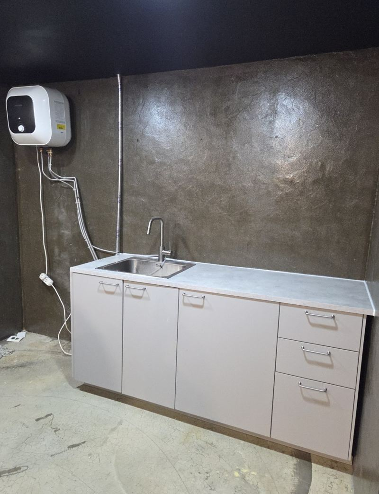
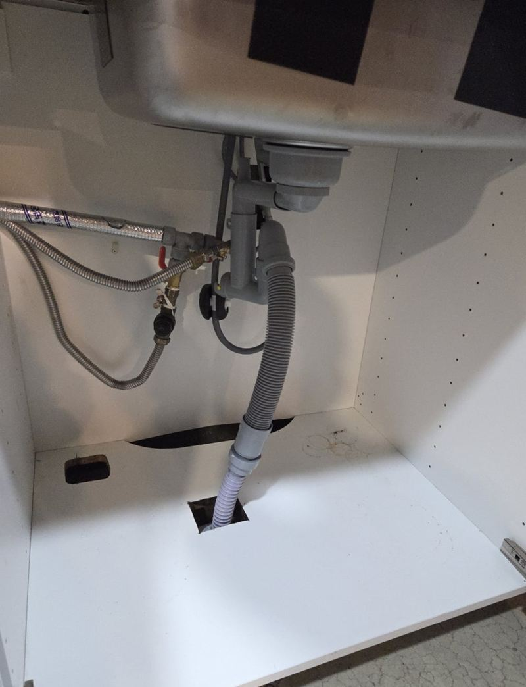
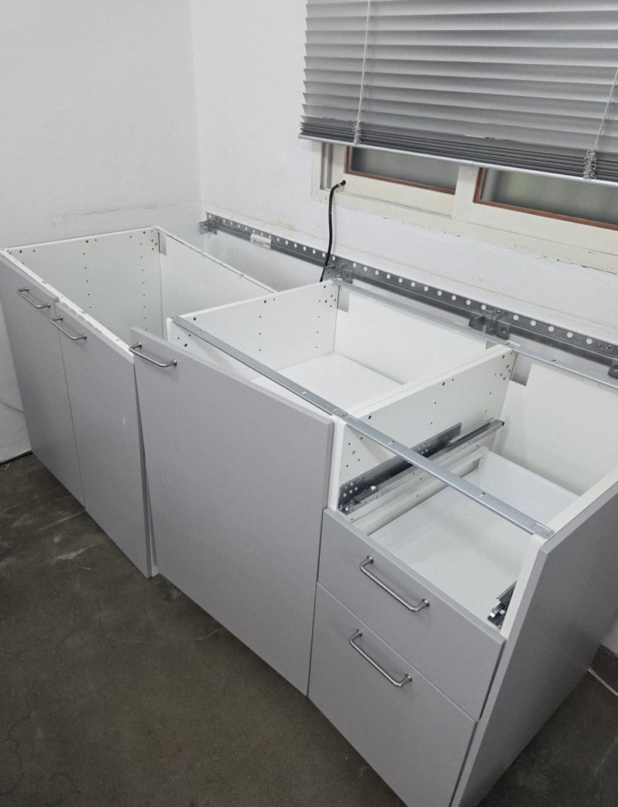
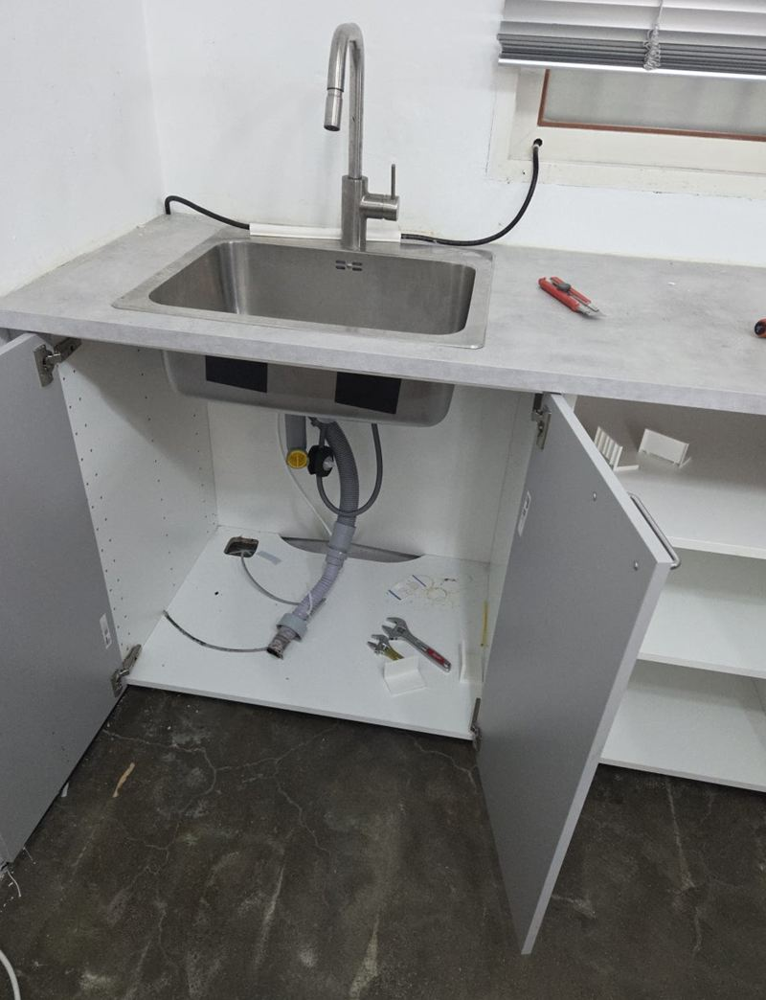
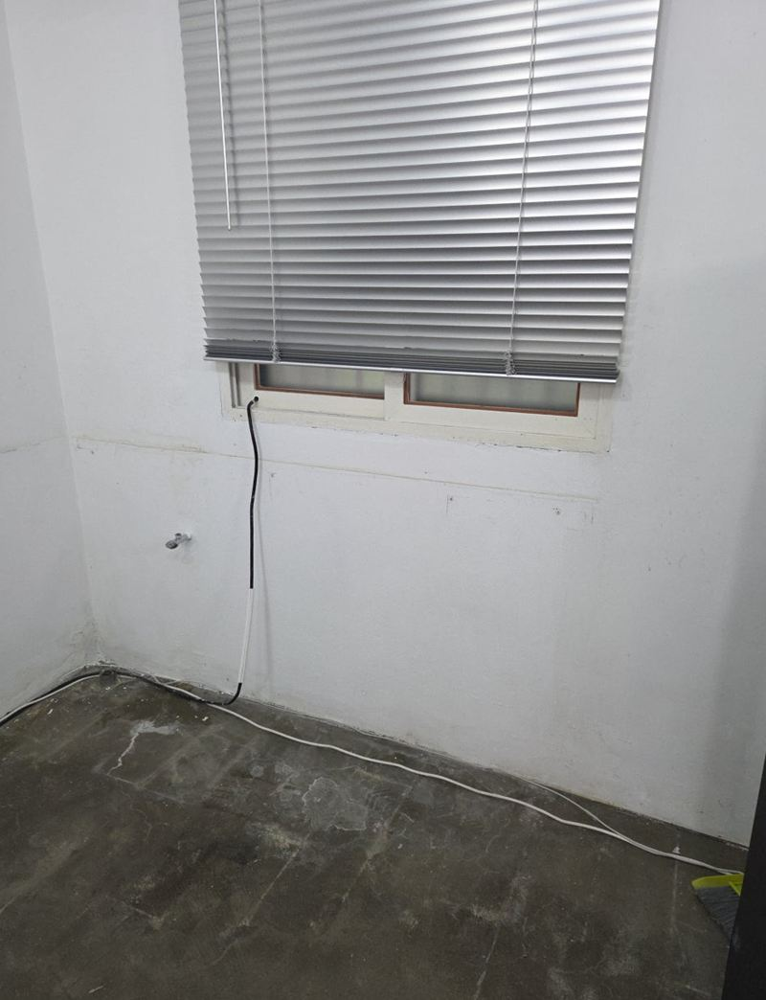
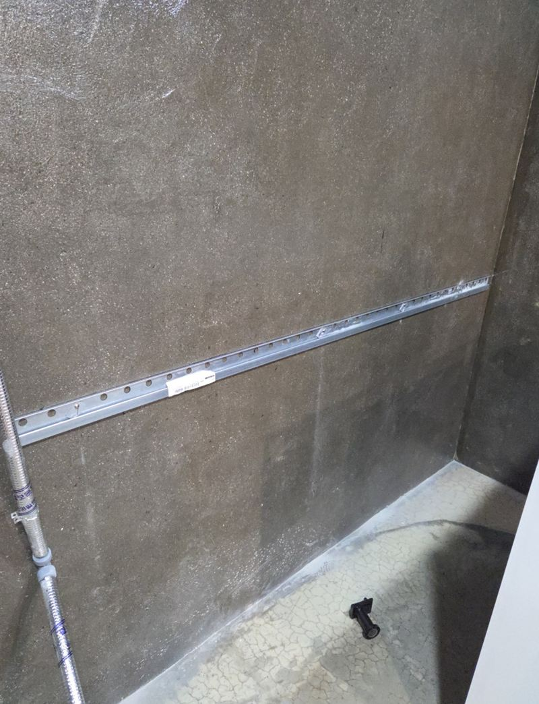
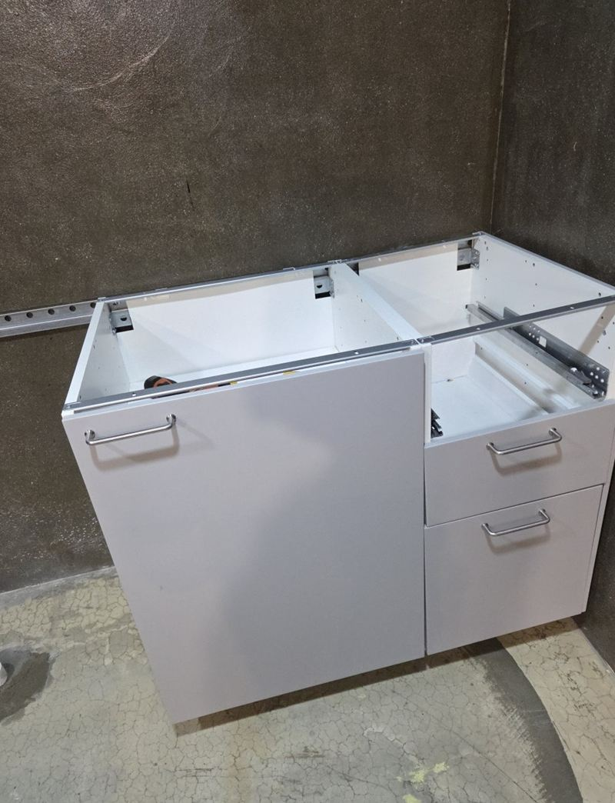

부천 싱크대 이사 이전 재설치 비용과 방법


이전 전재설치 후← 밀어서 전후 비교 →
회사를 옮기며 탕비실 싱크대를 어떻게 할지 고민하시던 대표님이었어요. 새로 사기엔 아깝고, 이케아 제품이라 분해했다가 다시 맞출 수 있을지 걱정하셨어요. 벽 고정이 많은 이케아 구조를 순서대로 풀어, 새 상가에서 정수기 라인까지 원래대로 이어 드렸어요.
| 현장 | 부천 원미구 중동, 사무실 → 새 상가 |
|---|---|
| 제품 | 이케아 싱크대(원목 상판), 급수·배수·정수기 라인 연결 |
| 한 일 | 라인 분리 → 실리콘·브라켓 해체 → 상판 보강 포장 → 새 공간 배관 확인 → 재설치·재연결 |
| 주의점 | 벽 고정 지점이 많아 해체 순서가 중요 |
이케아 싱크대가 까다로운 이유
일반 싱크대는 하부장 위에 상판을 얹는 구조가 많은데, 이케아 제품은 벽에 레일과 브라켓으로 고정하는 지점이 많고 부품이 촘촘히 맞물려 있어요. 아무 데나 먼저 풀면 부품이 휘거나 상판이 틀어져서, 조립 순서를 거꾸로 되짚듯 해체했어요.


정수기 라인까지 같이 옮기기
급수·배수 호스와 정수기 라인을 먼저 잠그고 분리해서 물이 새지 않게 막았어요. 원목 상판은 이동 중 긁히거나 모서리가 깨지기 쉬워 따로 보강 포장했어요. 새 상가에서는 수도와 배수 위치, 배수 경사를 먼저 확인하고 필요한 배관을 손본 다음 싱크대를 세웠어요.


하부장부터 놓고 수평을 맞춘 뒤 상판을 올려 고정했어요. 급수·배수를 잇고 정수기 라인도 원래 구조대로 연결한 다음, 물을 틀어 연결부 누수를 확인했어요.


싱크대 이전 비용을 정하는 것
| 항목 | 달라지는 이유 |
|---|---|
| 제품 구조 | 이케아처럼 벽 고정이 많으면 해체·조립 시간이 늘어요 |
| 연결 기기 | 정수기·온수기·식세기가 물려 있으면 재연결이 더해져요 |
| 새 공간 설비 | 급수·배수가 준비 안 돼 있으면 배관 작업이 필요해요 |
| 운반 | 거리, 층수, 엘리베이터 여부 |
싱크대 이전, 이런 분들이 맡기세요
- 회사·매장 이전탕비실 싱크대를 새 공간에서 그대로 쓰고 싶을 때요.
- 조립식 브랜드 싱크대이케아처럼 구조가 복잡한 제품도 순서대로 풀고 맞춰요.
- 정수기를 계속 쓰고 싶어요정수기 라인까지 같이 옮겨 연결해요.
싱크대 이전 질문
새 공간 벽 길이가 달라도 되나요?
이케아 제품은 모듈식이라 일부 장을 빼거나 위치를 바꿔 맞추기 쉬운 편이에요. 새 공간 치수를 먼저 알려주세요.
원목 상판에 생긴 얼룩도 손봐 주나요?
심한 손상은 어렵지만, 이동 전후로 상판 상태를 같이 보고 가능한 정리를 해 드려요.
해체만 먼저 하고 설치는 나중에 해도 되나요?
가능해요. 해체한 부품을 순서대로 묶어 두면 나중에 다시 맞추기 쉬워요.
정수기 업체를 따로 불러야 하나요?
라인 분리와 재연결은 함께 해요. 필터 교체나 정수기 고장은 정수기 업체에 문의해 주세요.
상가 관리 규정 때문에 작업 시간이 정해져 있어요
건물 규정에 맞춰 일정을 잡아요. 반입 가능 시간을 알려주세요.
싱크대 높이를 새 공간에 맞게 바꿀 수 있나요?
이케아 제품은 다리 높이 조절이 되는 경우가 많아서 새 공간 바닥에 맞춰 조정해요.
다른 싱크대·수납장 현장
- 부천 아일랜드 식탁 리폼으로 공간 넓히는 방법
- 동탄 지식산업센터 싱크대 설치, 업체 고르는 기준
- 화성 빌트인 오븐 철거 후 하부장 제작 비용
- 종로 싱크대 하부장 곰팡이 보수 방법
- 파주 사무실 이전 싱크대 철거 비용과 순서
- 성동 사무실 이전 시 기존 싱크대 재설치 순서
- 동탄 주방 싱크대 상하부장 철거·제작 비용 · 블로그
- 고양 싱크대 하부장 밑판 썩음, 교체 방법 · 블로그
- 고양 키큰장 리폼으로 상부장 만드는 방법 · 블로그
- 경기광주 부엌 수납장 교체 비용과 순서 · 블로그
- 하남 펜트리장 제작·이전 설치 방법 · 블로그
- 화성 상부장 처짐 없이 벽면 고정하는 방법 · 블로그
- 종로 오픈 수납장 문짝 새로 다는 방법 · 블로그
지금 싱크대 사진과 새 공간 사진, 제품 브랜드를 알려주세요.
전화 상담 010-4517-9872